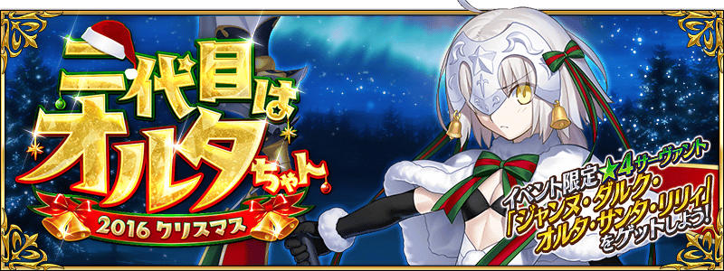

◆活動舉辦◆
2016年11月下旬
◆活動概要◆
舉辦期間限定活動｢第二代是Alter醬 ～2016聖誕節～｣！
活動期間中，在管理室(ターミナル)出現活動關卡！
参加活動取得「★4(SR)貞德・Alter・聖誕・Lily」吧！
◆活動参加條件◆
只有通過「第一特異點 邪龍百年戰爭 奧爾良」的Master才能參加

期間限定活動｢第二代是Alter醬 ～2016聖誕節～｣是只有通過「第一特異點 邪龍百年戰爭 奧爾良」的Master才能參加的活動。
因此，舉辦到卡美洛的主線關卡AP消費1/2宣傳活動。
無論如何藉此機會推進主線關卡，參加活動吧！
◆舉辦期間◆
2016年11月22日(二) 18:00～11月30日(三) 13:59
◆對象關卡◆
冬木、奧爾良、羅馬七省、歐開諾斯、倫敦、合眾為一、卡美洛內全部的主線關卡
※冬木、奧爾良、羅馬七省、歐開諾斯、倫敦、合眾為一、卡美洛内的Free關卡、幕間物語為對象外。
在「第二代是Alter醬 ～2016聖誕節～」活動關卡中，賦予特定Servant對活動攻略有利的效果！
強化對象的Servant，挑戰活動！
【對象Servant】
阿斯忒里歐、天草四郎、牛若丸、Emiya、子吉爾、貞德、貞德〔Alter〕、咒腕的哈桑、吉爾・德・雷(Caster)、俵藤太、風魔小太郎、瑪琇・基利艾拉特、瑪塔・哈里、雷奧尼達一世